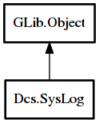

SysLog
Object Hierarchy:

Description:
public class SysLog : Object
Content:
Properties:
Static methods:
- public static weak SysLog get_default ()
Instantiate singleton for logging subsystem.
- public static void init (bool stdout, string? filename)
Initialize the logging subsystem.
- public static void shutdown ()
Cleans up after the logging subsystem.
- public static void increase_verbosity ()
Increases the amount of logging that will occur. By default only
warnings and above are displayed.
Creation methods:
Inherited Members:
All known members inherited from class GLib.Object
- @new
- newv
- new_valist
- get_type
- get_class
- @ref
- unref
- ref_sink
- weak_ref
- weak_unref
- add_weak_pointer
- remove_weak_pointer
- @get
- @set
- get_property
- set_property
- get_data
- set_data
- set_data_full
- steal_data
- get_qdata
- set_qdata
- set_qdata_full
- steal_qdata
- freeze_notify
- thaw_notify
- dispose
- constructed
- notify_property
- connect
- disconnect
- add_toggle_ref
- remove_toggle_ref
- bind_property
- notify
- ref_count